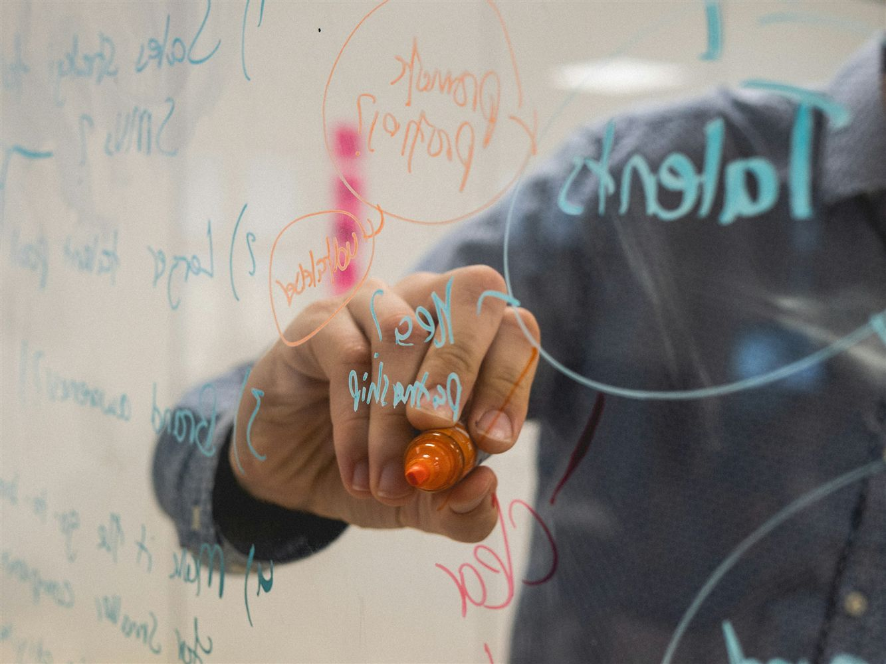

Independent, family owned and internationally experienced
Founded in 1984, Soma is an international management consultancy specialising in leadership, organisational change and major programme performance. We align people, strategy and delivery to turn complex business priorities into measurable results.
We are a family owned consultancy, based in England and working with organisations around the world, guided by our core values of participation, trust and shared vision.
Our work brings together leadership development, strategic planning, team development, coaching, conflict management and support for collaborative projects. We draw on psychometric and analytical tools where they help people understand challenges, strengthen relationships and improve performance.
Based on the side of the Malvern Hills in the UK, and with a base in the USA, we work regularly across Europe, Asia and Australia. Today, we have supported clients in over 25 countries worldwide, combining deep behavioural expertise with practical experience across major projects, organisational transformation and operational excellence.

“Soma develops people as well as managers, creating confident leaders with the capability to inspire others.”
Soma client“The skills developed through Soma are not just management skills, they’re skills for life.”
Soma clientThe story behind the Soma name
The name Soma is taken from an ancient Sanskrit word meaning “sap of life.” It captures the sense of corporate core values and capabilities that determine the long term success of an organisation.
Our logo, a labyrinth, is a universal symbol reflecting the search for knowledge and growth — a single, considered path rather than a maze designed to confuse.
Participation
Ensuring that commitment to relationships and to action is achieved by involving people in the process.
Trust
Building relationships where people feel able to be honest, challenge openly and rely on one another, the foundation for real collaboration and lasting change.
Shared Vision
Helping people understand the direction that they, their team and their organisation are going. By doing this, everyone moves forward together.
“What makes Soma unique is its ability to blend proven management principles with genuine personal development.”
Soma clientFocus
Working together with our client we generate shared ownership for tailored solutions that use our robust and proven approach to drive change and deliver the agreed outcomes.
Business Impact
Understanding our clients’ needs and enhancing their organisations’ capabilities to deliver strategy with ongoing measurable business impact.
Relevance
Working with leaders, teams and individuals on their current business challenges, using the learning to develop and deliver actionable solutions that gain momentum quickly.
Personal Change
Providing high impact personal learning, skills development and behaviour change that delivers tangible results and enhances motivation and commitment.
Flexibility
Adapting the learning approach and content to meet the different needs of individuals and groups, while still achieving the organisation’s objectives.
Accessibility
Distilling complex concepts into easily understood, implemented learning that drives individuals to integrate new approaches with their current strengths.